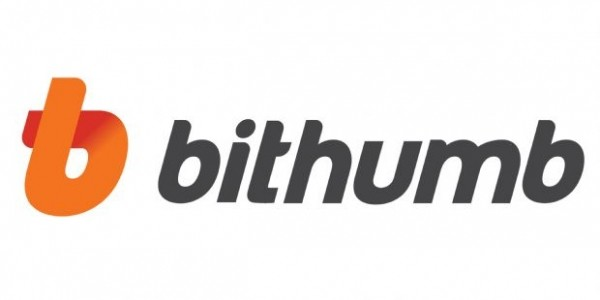
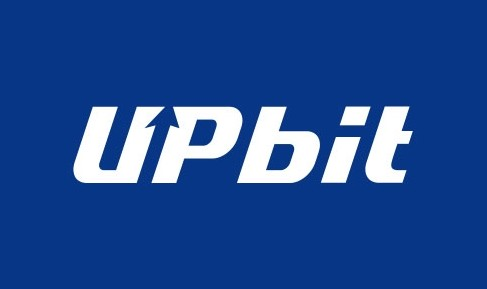
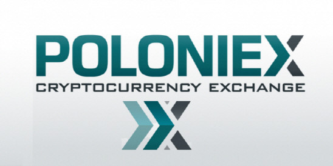

명칭 : 빗썸(bithumb)
운영회사 : ㈜비티씨코리아닷컴
대표이사 : 김재욱
업종명 : 통신판매업
상장명 : 비상장
기본수수료 : 0.25%(선불쿠폰 0.04%~0.2%)
장점
1. 24시간 상담이 가능하다.
2. 이용자가 많고 거래량이 많다.
3. 출금한도가 타 거래소에 비해 높다.
단점
1. 쿠폰판매를 하고있지만 타 거래소에 비해 비싼 0.15%의 수수료
2. UI가 타 거래소에 비해 불편하다 (타 거래소는 빗썸과 다르게 주식시스템과 가깝게 설계되었다.)
3. 소수점 이하 넷째 자리부터 거래가능하다.

명칭 : 업비트(UPbit)
운영회사 : ㈜두나무
대표이사 : 이석우
업종명 : 통신판매업
상장명 : 비상장
기본수수료 : 0.05%
장점
1. 북미 거래량 1위 거래소인 비트렉스와의 독점 제휴.
2. 증권플러스를 개발한 두나무가 운영하는 거래소인 만큼 UX가 매우 좋다.
3. 최고의 장점은 업비트 앱이다. 타 거래소 앱은 물론이고 웬만한 주식거래 앱보다도 편리하다는 평을 받고있다.
단점
1. 24시간 카톡 상담이 주된 고객센터 채널이고 전화 상담은 연결이 어렵다.
2. 호가단위(틱)가 현재 다른 거래소들에 비해 높다. 타 거래소의 경우 시세가 100원 이상인경우 0.1원단위의 틱으로 조정된 곳이 많지만, 업비트는 100원 이상인경우 1원을 고수하고 있다.
3. 원화 일일 출금한도가 최대 등급일때 2억으로 타 거래소에 비해 매우 낮다.

명칭 : Poloniex(폴로닉스)
운영 : Poloniex, LLC
대표이사 : Tristan D'Agosta
본사 : Wilmington,Delaware, U.S.
상장명 : 비상장
장점
1. 현시점에서 가장 투자자들에게 지지받는 암호화폐 거래소 중 하나.
2. 비트코인, 이더리움, 모네로, 테더를 기축으로 다양한 알트코인들이 거래된다.
3. 외국 거래소 지만 다양한 알트코인을 취급하고 거래량도 활발하다.
단점
1. 요즘들어 지속된 하락장과 소극적인 신규 코인상장,잦은 접속오류문제로 자본이 Bittrex같은 거래소로 이동됨.
2. 이곳에서 오입금시 티켓을 받는데만 오래걸리고 찾을확률은 거의없다.